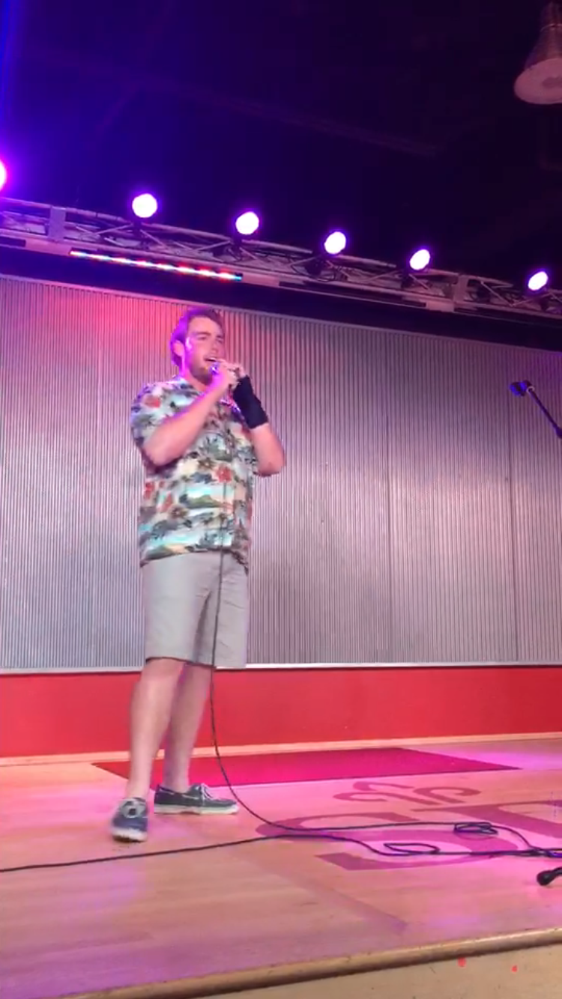

Charlie Coghlin is an up and coming stand-up comedian living in Philadelphia. He got his start doing local open mic nights, but his career has taken off since then. He now headlines his own shows and is taking the comedy world by storm. He draws influence from his favorite comedians, Aziz Ansari and John Mulaney. His first feature length special is currently in production and will be available for free online on January 15, 2016. He's a fun-loving guy and his bright personality shines on stage. His relatable jokes and hilarious anectodes have left audiences wanting more since the first time he stepped on stage.
"Coghlin is a guy who comes along once in a generation"
-Joseph H. Critic
"Flawless" -TIME Magazine
"This kid is an inspiration" -Aziz Ansari
"Watch out comedy world, Charlie Coghlin is here"
-People Magazine
"It was tight. Bet I'm funnier though." -Kanye West